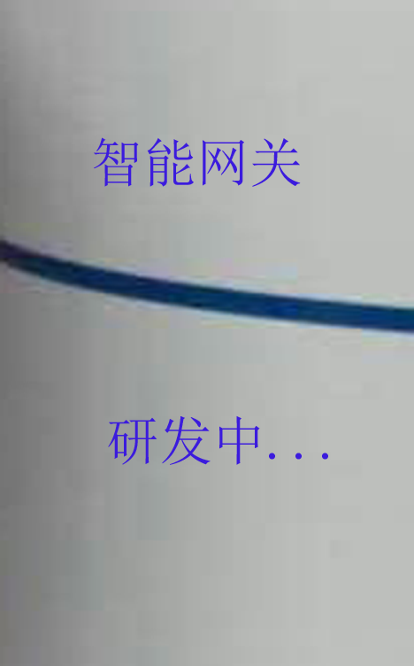
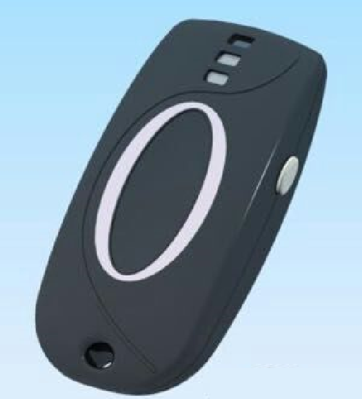

| 联桥网云和桂林海威科技联合研发了下面两款物联网设备，即智能网关和医疗挂件(Medical Pendant). 配合应用云平台, 可以搭建居家养老的解决方案或提供智能居家的个性化服务. | |
 |
智能网关(研发中)是一种集家庭监控和家庭自动化多功能于一体的设备。它已将摄像头、全景视频、Z-Wave和蓝牙技术的家庭自动化、环境、健康传感器等集成一体，它与软件云平台连接互动。设计目标是创造人们想要使用的产品，并且在家里看起来很有吸引力。简单操作设置， 开盒通电即可使用。 使老人们与他们的亲戚和监护人建立了连接，给老年人解决方案提供了老年人的日常活动起居情况。定制设置规则，综合平日收集的数据分析理解，及时知道意外情况或非正常事件发生。当家里发生意外事件时，除了监控设备自动响应之外，它还能报警，用电话、短信、或者电子邮件、视频等方式通知有关人员。它具有Wi-Fi功能，可通过路由器上网。智能网关自备多种通信接口， 可以连接上传像三诺蓝牙血糖仪等附加物联网设备。智能网关将和三开科技组成居家养老解决方案. |
 |
医疗挂件和老年人一键便携式电话类似，是一个可以戴在脖子上，别在腰带上，或戴在手腕上的设备。该设备防水，可以在室内或室外的任何地方操作，有自动跌倒检测和报警功能，有与其他设备配对后的蓝牙传输能力。该设备还具有接收和发送信息到云端的能力。该挂件具有GPS定位功能，紧急情况发生时能自动锁定位置。该挂件可以自动切换连接家中的智能网关。结合智能网关，老年人可以在建筑物内定位。该挂件还具有帮助老年人借助二维码扫描 (将在下一个版本提供)，阅读的快速语音指导功能(Patent Pending US 15/134，552)、以及IC卡识别等功能。科技组成居家养老解决方案. |